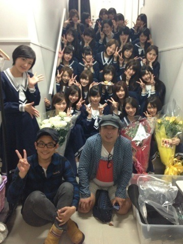

| 2013/05 12 Sun | 斎藤ちはる 悔しい。だからこそ ファイティングウー マン(´>∀<｀)ゝ |
ちはるーむへようこそ\( ˆoˆ )/
昨日は、北嶋に立候補しました！
すると、初めての女中1になれました！
女中の中で1番。
嬉しいことです。ありがたき幸せ。
昨日は演技が思ってた通りできて
すごく自分的によかったのだけど、
エチュードと言うんですか。
無茶振りと言ってよろしいのですか。
まあ、それが毎回、毎回、うまくできなくて
すごく苦戦してます(´;_; `)(´;_; `)
どうすればいいのよう(´;_; `)！！
いつも回転が早い子に憧れるよー(´+ω+｀)
だからもう残り少ないけど明日からは
落ち着いてできるようにがんばるっ！！！
このまんまじゃ終われねえぜ！！

日村さんとスピードワゴン井戸田さん
来てくださりました(*´;ω;｀*)
嬉しかったです(*´;ω;｀*)
すごく大好きなのでもっと前で撮りたかったけども
後ろで控えめにピースしてます。
ちっちゃすぎて顔がくすんでおる。笑
今日の昼には、明田川にリベンジ。
二幕にでれませんでした。
正直、全く出来なかった。
スタッフさんにもハキがなかったって言われてしまったし、
愛未にもちはるならもっとできたはず。って言われてしまった。
なんもできなかった自分が歯がゆくて悔しくて
みさこのようにいーーーーーー！って騒ぎたくなった。
いや、むしろ心の中で騒いだ。
悔いだけは残したくないと思っていたのに。
なーんだ。ちはるってこんなもんだったんだ。
って思ってほしくなかったのに。
くーーー( ꒪⌓꒪ )
だから夜はその鬱憤を晴らすために
北嶋にリベンジした！
しかし残念でした。
エチュードも、大変な結果だったし
中途半端だったしだめでした(´;_; `)
くぅっっ
もっと、皆さんにいいものを見せたいようっ
だから、東京千秋楽に向かって
そして大阪公演に向かって
がんばります！！！！！
ファイティングウーマン。
最近はポーズ付き。
舞台裏でのよくみる景色になりつつある。
今度写真撮ってみるね！！！
し！ふ！く！私服！！
Tシャツを着まわして、
またしてもねね意識d=(^o^)=b
カーディガンが春らしく、夏らしく、お気に入り♡
うぉい。
明日は東京千秋楽もあるし、
頑張るしかないぞ！！！
当たって砕けろ。人間だもの。
ばいるんっ
るんるんっ
ちはるんっ
(´>∀<｀)ゝ